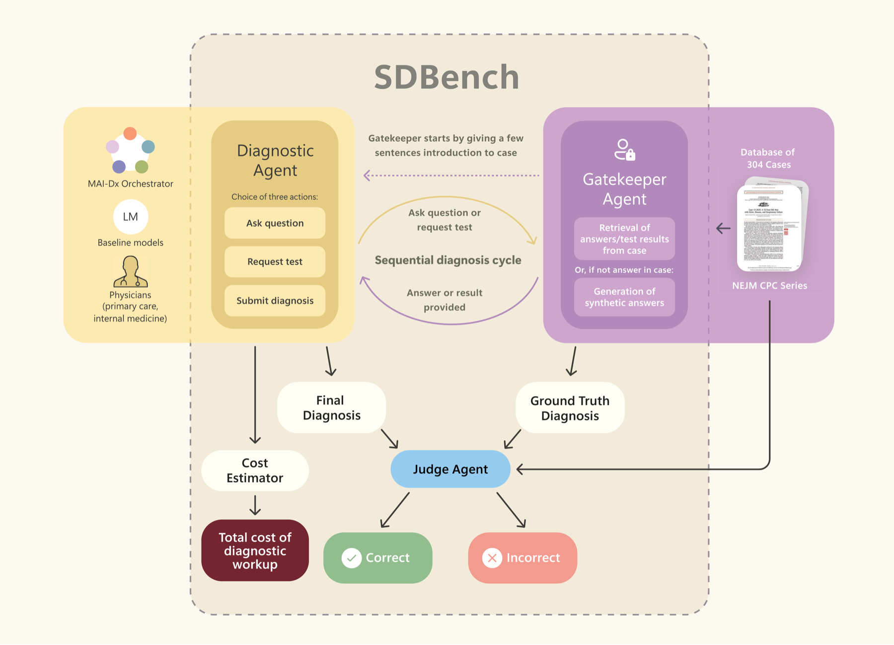

SDBench evaluates how AI systems perform sequential diagnosis: rather than answering a multiple-choice question, a system is given only a brief, non-revealing case summary and must iteratively order tests, ask questions, and commit a diagnosis — turn by turn, just as a clinician works up a real case. Each case is scored on both diagnostic accuracy and the cost of the tests ordered, surfacing the accuracy–cost trade-offs that matter in practice.
For each case, the harness runs a sequential loop between three roles. The gatekeeper and judge are fixed by the chosen configuration; the diagnostic agent and its underlying model is what you are benchmarking.

The system under test. Receives a short case summary that does not reveal the diagnosis and decides, turn by turn, to order tests, ask questions, or commit a diagnosis.
Answers each test order or question from the case's full text — returning the real result when present, or a realistic synthetic result when the case does not contain it.
SDBench cases are drawn from detailed clinical case reports, split into train, validation, and test sets. Published results are reported on the combined validation and test sets; the train set can be used for development and isn't reported on.
Recent NEJM Clinical Pathological Conference cases, published as Case Records of the Massachusetts General Hospital. The SDBench dataset must be licensed from NEJM.
Cases sourced from de-identified hospital records, closer in form to discharge summaries. Access requires PhysioNet credentialing, training, and acceptance of the data use agreement.
Five fully-synthetic NEJM-style cases, included in the repository as the default dataset for open, access-free evaluation. A dummy train set for development and testing — not for reporting diagnostic performance.
SDBench uses uv for environment management. Clone the SDBench repository, then set your OpenRouter key and run the baseline agent with GPT-5 (the default model) and the default config on the bundled synthetic dataset:
git clone https://github.com/microsoft/sdbench.git cd sdbench export OPENROUTER_API_KEY=... uv run python -m sdbench.cli.harness
uv run sets up the environment
automatically — no separate install step needed. To benchmark a different model, swap
the agent, or use a clinically sourced dataset, see the
README →
Open the checkout in a coding agent that follows the repository's agent instructions and ask:
Run SDBench on <model name>
The agent will ask for missing model, dataset, split, and configuration choices, help prepare credentials and data, and run evaluation followed by grounded costing. It reports progress and results and helps resume interrupted work. See the agent run guide for the full workflow.
If you use SDBench, please cite the Science article:
@article{nori2026sequentialdiagnosislanguagemodels,
title={Sequential Diagnosis with Language Models},
author={Harsha Nori and Mayank Daswani and Christopher Kelly and Scott Lundberg and
Marco Tulio Ribeiro and Marc Wilson and Xiaoxuan Liu and Viknesh Sounderajah and
Jonathan Carlson and Matthew P Lungren and Bay Gross and Peter Hames and
Mustafa Suleyman and Dominic King and Eric Horvitz},
journal={Science},
year={2026},
doi={10.1126/science.aeh7930},
url={https://www.science.org/doi/10.1126/science.aeh7930},
}